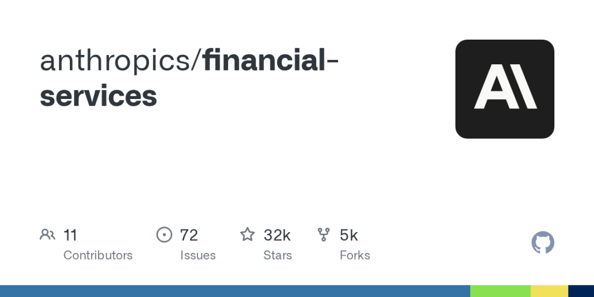
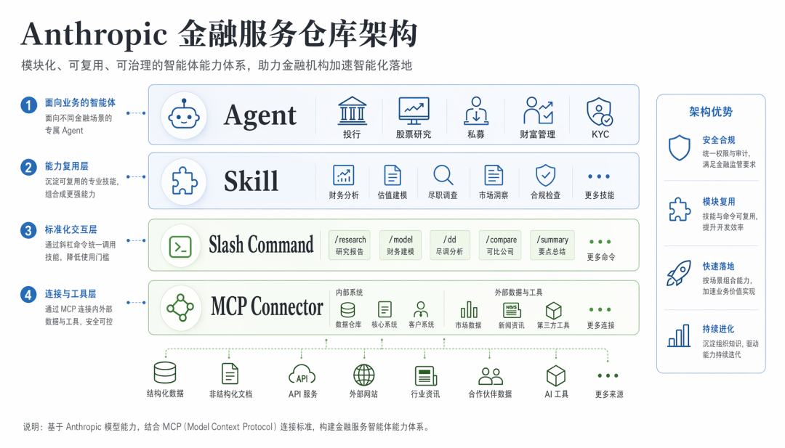
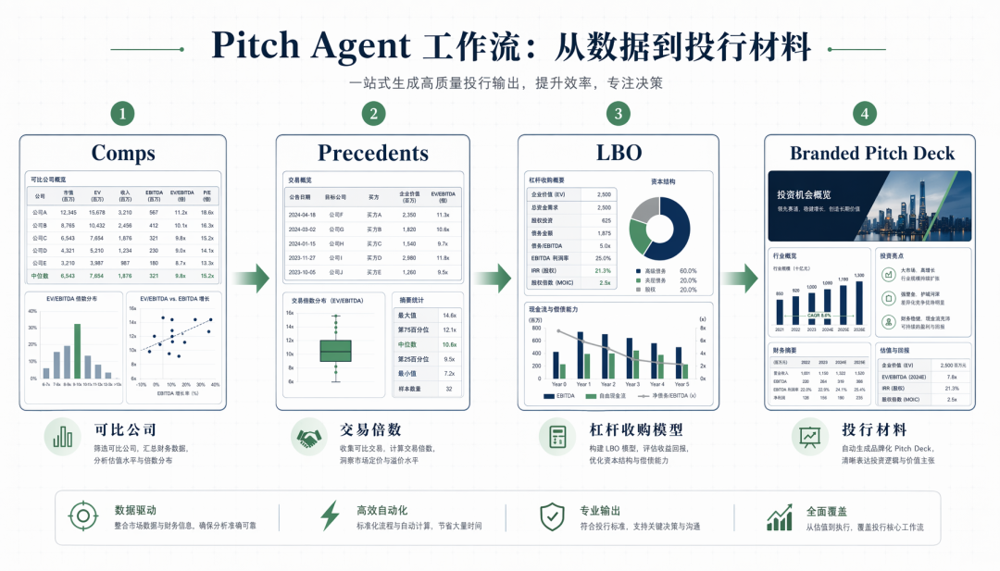
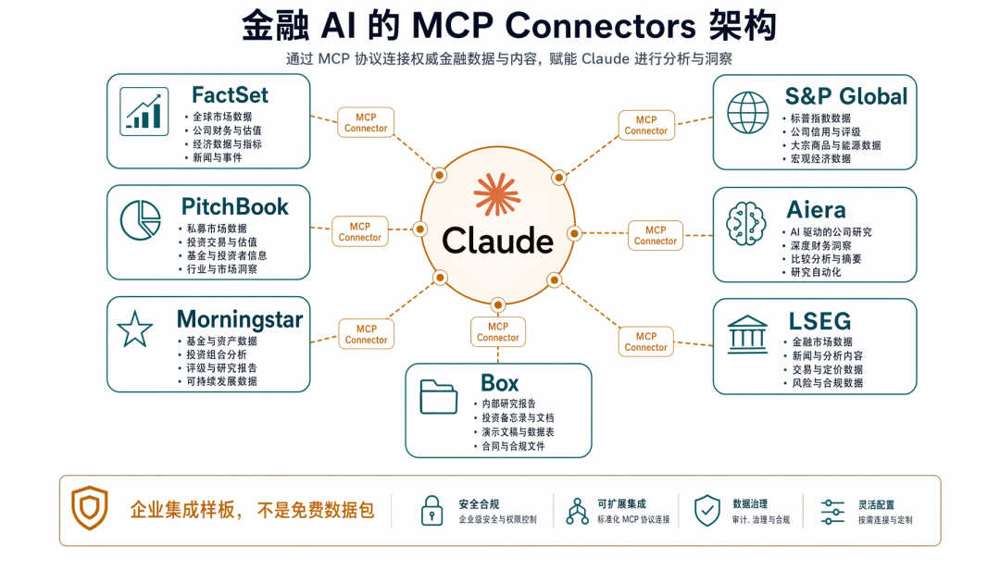
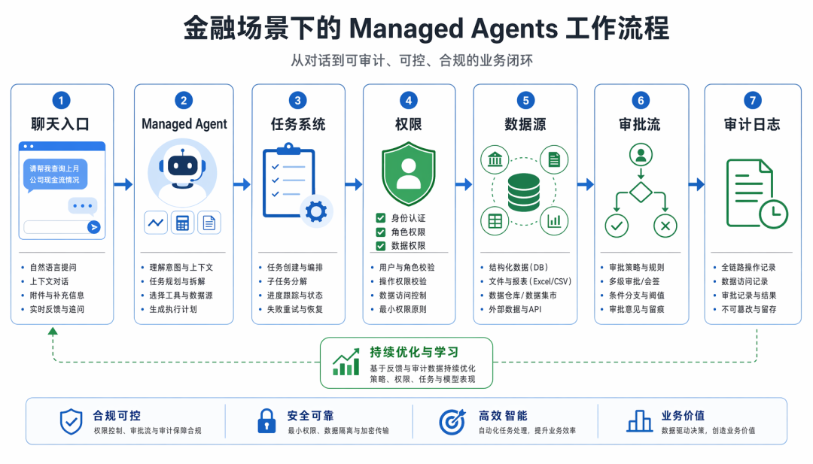

今天在GitHub Trending上看到Anthropic扔出来一个仓库，叫financial-services。点进去一看，好家伙，直接冲着华尔街那帮人去的。投行、股票研究、私募股权、财富管理，四个垂直领域全给包圆了。
这属于 Anthropic 亲自下场做了一套金融服务行业的 Claude 工作流模板，目前在 GitHub上收获3.2万 Star。

它到底是个啥
它不是一个聊天页面，也不是“AI 金融助手”那种空壳，它把投行、股票研究、私募、财富管理、基金运营、KYC 这些工作拆成 Agent、Skill、Slash Command、MCP Connector 几层。能直接装成 Claude 插件，也能通过 Managed Agents API 放进企业自己的流程里。

你可以把它理解成一个“AI金融工具箱”。里面塞满了现成的技能，比如可比公司分析（comps）、现金流折现模型（DCF）、杠杆收购模型（LBO）、三张财务报表模型。还有一堆数据连接器，能直接对接 Daloopa、Morningstar、S&P Global、FactSet 这些数据提供商。
快速上手
我们先把插件市场加进去：
claude plugin marketplace add anthropics/financial-services然后先装核心插件：
claude plugin install financial-analysis@claude-for-financial-services别一上来全装，这个仓库覆盖面很宽，投行、研究、私募、运营全塞进来，第一次全装只会把命令列表弄得很乱。
更顺的方式是先装 financial-analysis，再按场景加一个垂直插件。比如做投行材料，就装：
claude plugin install investment-banking@claude-for-financial-services想直接试完整 Agent，再装：
claude plugin install pitch-agent@claude-for-financial-services装完之后，会多出一批 slash command，比如 /comps、/dcf、/lbo、/earnings、/ic-memo。这些命令比“帮我分析一下这家公司”靠谱，至少它告诉模型，我们现在要跑哪一种金融动作。
容易踩的坑也提前说一下，README 里列了 FactSet、PitchBook、Morningstar 这些 MCP 连接器，但这不等于 clone 仓库就能用数据。FactSet 和 PitchBook 的 API key 成本不低，README 里列出来更像企业集成路线图，不是给个人开发者白嫖数据。
功能详情
1、Pitch Agent：投行 pitch book 的骨架
Pitch Agent 做的是投行覆盖和 advisory 里的典型流程：comps、precedents、LBO，然后生成 branded pitch deck。

这不是“帮我写一份商业计划书”，它更接近投行 pitch book 的流水线：先找可比公司，看交易倍数，再跑 LBO，最后把东西塞进 PPT。
真正有用的是结构，很多所谓金融 AI 产品只会写一段“行业前景广阔、公司具备优势”。Pitch Agent 至少把材料链条搭出来了，数据、模型、deck 都是单独环节，后面要改模板、改口径、接内部数据，都有地方下手。
2、financial-analysis：核心能力都在这里
financial-analysis 是最应该先看的插件。
它里面有 /comps、/dcf、/lbo、/3-statement-model、/debug-model。前几个大家都熟，真正值得盯的是 /debug-model。
举个模拟片段，方便理解它应该怎么用。
我们拿一张自建 LBO 演示模型进去跑 /debug-model，理想输出不是“这个模型整体合理”，那种话没用。它应该标出更具体的问题，比如：
1. WACC 输入为硬编码 8.0%，没有链接到 Assumptions 页。
2. Exit Multiple 在 Base Case 和 Downside Case 使用同一个单元格，敏感性表无法独立变化。
3. Debt Schedule 的期末债务余额没有回链到三表模型，Balance Sheet 仍然能平，是因为 Cash 被迫吸收差额。这种检查才像金融建模里的脏活，DCF 谁都能生成，查硬编码、查错链、查平衡表假平，才是能省时间的地方。
3、Skill：把团队口径写进文件
Skill 本质上就是可复用的工作说明。
比如股票研究插件里有 earnings analysis、model update、initiating coverage。私募插件里有 deal screening、IC memo、portfolio monitoring。投行插件里有 CIM、teaser、buyer list、merger model。
这东西很有用，金融团队最烦的不是“模型不会写中文”，而是输出口径不稳定。今天像投行，明天像财经自媒体，后天又像咨询报告。Skill 文件能把格式、步骤、检查点写死一点，至少不会每次都从零开始训模型。
4、Slash Command：少写提示词
这个项目准备了一堆 slash command。
投行有 /comps、/dcf、/lbo、/teaser、/buyer-list。股票研究有 /earnings、/model-update、/initiate。私募有 /screen-deal、/ic-memo、/returns。
命令比长 prompt 更适合团队用，新人不需要背一套提示词，只要知道什么时候敲 /comps，什么时候敲 /ic-memo。
当然，command 也不是魔法，输入材料烂，输出照样烂。它解决的是流程入口，不解决数据质量。
5、股票研究：不是只写研报
equity-research 这块拆得比较细。
它不是只放一个“写研报”命令，而是分成 earnings preview、earnings analysis、model update、initiating coverage、morning note、sector overview、thesis tracker、catalyst calendar、idea generation。
这是模拟研究员的日常，真实工作不是每天坐下来写万字研报，而是追财报会、改模型、补观点、更新催化剂、给晨会准备几条能讲的话。
这块如果接上 Aiera 这类 transcript 数据，再接上 FactSet 或 S&P Global，才有意义，没有数据源，它只能当写作框架用。
6、GL Reconciler：容易落地
GL Reconciler 是这种流程最容易落地，输入输出清楚，错了也能追责。
它做的不是自动关账，而是找 breaks、追 root cause、把结果交给人确认，这个范围比“AI CFO”老实太多，也实用太多。
比如总账和子账对不上，Agent 应该输出的是差异金额、涉及账户、可能来源、需要谁确认，而不是写一段漂亮的财务总结。运营场景里，废话越少越好。
7、KYC Screener：适合做材料初筛
KYC Screener 负责解析 onboarding documents，跑规则表，标出缺口。
这类流程也适合 Agent，KYC 不只是 OCR，它还要看文件是否齐、字段是否对、规则是否满足、哪里需要补材料。
让它做初筛、列缺口、准备 review packet，非常够用。
8、MCP Connector：企业路线图，不是免费数据包
README 里列了不少 MCP Connector：Daloopa、Morningstar、S&P Global、FactSet、Moody’s、MT Newswires、Aiera、LSEG、PitchBook、Chronograph、Egnyte、Box。

这块要看清楚，它说明 Anthropic 想让 Claude 接真实金融数据源，而不是只靠模型记忆编答案，但这些数据源大多不是个人开发者随便能用的。
所以这个仓库的 MCP 更像企业集成样板，金融机构已经买了数据服务，就可以照着这个方向把 Claude 接进去。没买数据服务，光看这个列表容易上头。
9、Managed Agents：这才是正经思路
managed-agent-cookbooks/ 里放的是 Managed Agents API 的部署模板，每个 Agent 下面有 agent.yaml、subagents、steering examples。
README 给了部署命令：
export ANTHROPIC_API_KEY=sk-ant-...
scripts/deploy-managed-agent.sh gl-reconciler这才是金融 Agent 该有的样子，那些想把所有事塞进聊天窗口的 AI 产品，金融团队用两周就会弃坑。真正能进生产的东西，得接任务系统、权限、数据源、审批流和审计日志。

Managed Agent 的意义就在这里：聊天只是入口之一，不是工作流本身。
10、Microsoft 365：入口放回办公软件
仓库里还有 claude-for-msft-365-install/，它用来帮 IT 管理员部署 Claude Microsoft 365 add-in。
金融团队大部分活就在 Excel、PowerPoint、Word、Outlook 里，让 Claude 进这些地方，比另开一个 AI 平台现实。
这也是为什么这个目录值得看，它不是炫功能，而是在解决入口问题。工具离工作现场太远，再聪明也没人天天打开。
这项目该怎么拆
别把它当成一个成品系统，它更像一套金融 Agent 的样板间。
• 想学结构，看 plugins/agent-plugins。• 想学专业动作怎么写，看 plugins/vertical-plugins。• 想看企业部署，看 managed-agent-cookbooks。• 想看数据怎么接，看 financial-analysis里的 MCP 配置。
真要用起来，重点不是照抄 Anthropic 的金融内容，而是把自己的模板、口径、审批规则、数据源塞进去。
怎么改成你自己的
Anthropic 明确说了，这些都是参考模板，你用得顺手的前提是把它改成你们公司自己的那套。
• 换数据连接器 改 .mcp.json，指向你自己的数据提供商和内部系统。如果你用 Bloomberg Terminal，那就得自己写个 MCP server，仓库里有例子，照猫画虎。• 加公司上下文 把你们公司或者你自己的那套术语、流程、格式标准扔进技能文件里。比如你们 pitch deck 的字体、颜色、logo 位置，你们 IC memo 的固定结构，你们模型里特有的调整项。 • 用自己的模板 /ppt-template命令可以教 Claude 你们公司的品牌 PPT 布局，你给它几个样例，它就能生成一个可复用的 PPT 模板技能。• 调整代理范围 编辑 agents/<slug>.md，匹配你们团队实际跑工作流的方式，比如你们的 pitch 流程多了两步，那就加进去。• 加你自己的工作流 如果你有个自己的工作流，复制仓库的结构，自己建一个，技能文件都是 markdown 和 JSON，没编译步骤，改起来不费劲。
最关键的一点：这些代理输出的一切都要经过人工审核，它只是 draft，你才是负责的那个人。
Anthropic 自己说得挺清楚：这里面的东西不构成投资、法律、税务或会计建议。这些代理只是起草分析师的工作成果——模型、备忘录、研究笔记、对账——最终需要合格的专业人士审核。它们不提供投资建议，不执行交易，不绑定风险，不记账，每个输出都要经过人工签字。你得自己验证输出，并确保符合你公司所在的法律法规。
最后聊聊
这个仓库不是产品，是模板。它的价值在于给你一个起点，省掉从零设计 prompt 和技能的时间。
但你得花力气改，花力气对接，花力气验证。如果你愿意投入，它能帮你把一些重复性工作自动化；如果你指望它替你思考，那还是算了。
GitHub地址：
https://github.com/anthropics/financial-services
这个公众号曾分享过许多有趣的开源项目。如果你不想逐篇翻阅历史文章，也可以直接关注微信公众号“极客之家”，通过后台留言与我们互动交流